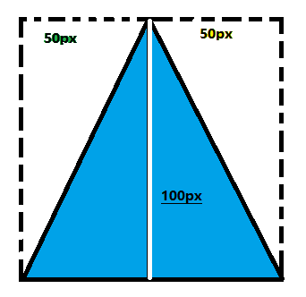

先看图：
这里，我分别标出了4个边框
这里可以明显的看出，实际上我们的border，是一个等腰梯形。
接下来，我们设置：
令一个div的长宽都是0。此时这个div可以看近似做是一个无限小的点。并且这个div的content和padding都是0。此时如果我们放大这个div，看到的会是这样的：
可以看到其中的content和padding都是0所以没有了。所以4个边框变成了4个等腰三角形。
其中白色的线的长度，就是border-bottom的线宽。
接下来设置：
上边的设置中，50 100 分别是线宽。
transparent表示设置为透明色。
结果：

最后我们得到的三角形的蓝色部分，完全是由border-bottom以一己之力构成的。
虚线围起来的白色区域是设置为透明的border-left和border-right。实际上是看不到的。
在图中可以看出，只要改变两个50px，就可以自由的改变三角形的顶点的位置
明白了这个原理，就可以轻松构成其他方向的任意三角形，梯形等等了。